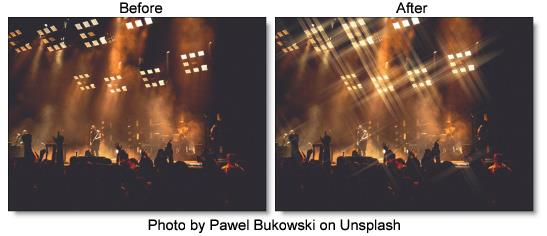

Star
Description
User definable multi-point star patterns are generated on highlights in the image.
Category
Light.
Controls
Presets
To select a preset, pick one from the Presets window.
Blend
Determines the blend mode to be used when adding the stars.
Add
The stars are added to your image.
Screen
The stars are combined with the image using a Screen blend mode. This looks kind of like the Add blend mode, but highlights are retained.
Brightness
Determines the brightness of the stars.
Spokes
Controls the number of star spokes.
Size
Sets the star size.
Angle
Rotates the stars.
Color
Sets the star color.
Matte
A matte is used to create the star effect. Go to the
Matte section of Common Filter Controls to see how the Matte controls work.
Alpha
Stars Under Source
Composites the image over the stars.